1
出了海关：从T1到达大厅开始
先完成入境审查 → 取行李 → 海关。出了海关后还在 T1 到达大厅，先不要走出航站楼。下面照片以北翼为例；若当天从南翼出来，第3步同样走向中央大楼。
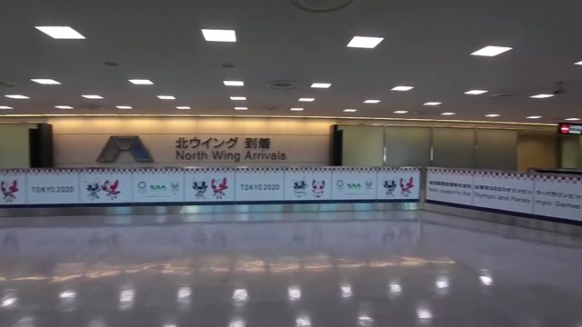
起点：T1 北翼国际到达大厅
迎面看到巴士售票处是正常的。不需要买巴士票，继续找下一步写着“铁道 / Train”的黑色指示牌。
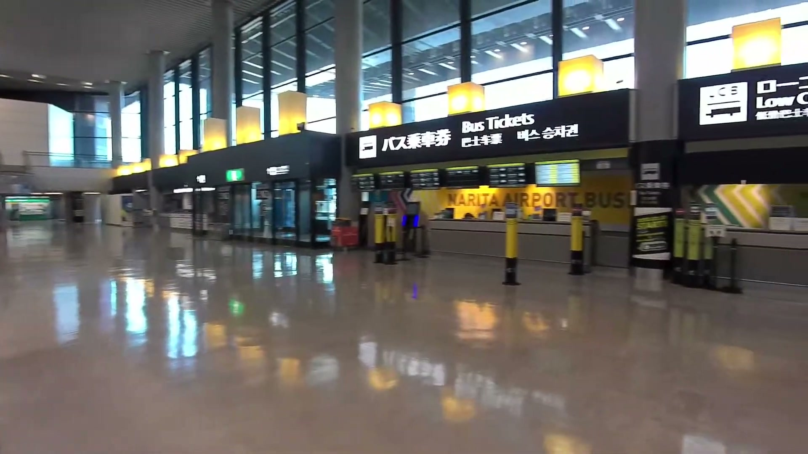
迎面是巴士售票处
从入境大厅到出站的完整攻略｜行李箱全程电梯版
一眼看懂路线
只走：地面一层1F → 机场电梯 → 地下一层B1 → 刷卡 → 站内电梯 → 地下二层B2。
本页从入境、取行李、过海关后开始，完整覆盖成田机场乘车、日本桥换乘、高田马场换乘和新井药师前出站；不需要打开任何前置攻略。视频与照片用于认地标，路线事实以铁路官方图为准。
先完成入境审查 → 取行李 → 海关。出了海关后还在 T1 到达大厅，先不要走出航站楼。下面照片以北翼为例；若当天从南翼出来，第3步同样走向中央大楼。

迎面看到巴士售票处是正常的。不需要买巴士票，继续找下一步写着“铁道 / Train”的黑色指示牌。

先打开苹果手机（iPhone）的“钱包”应用，点开 Suica交通卡。确认余额至少 ¥2,000，以免中途余额不足出不了闸。
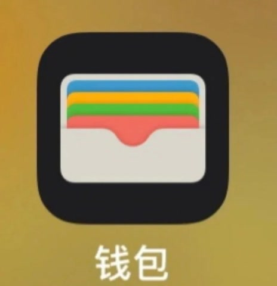
图 1：在苹果手机主屏幕找到“钱包”应用。
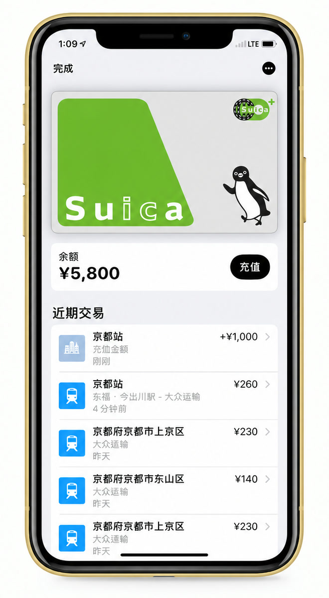
图 2：打开 Suica交通卡后，确认余额；余额不足时点“充值”，选择充值金额。
厦门航空目前使用T1北翼；实际从哪一侧出海关以当天为准。从北翼出来就向中央方向走；从南翼出来也向中央方向走。共同目标是中央口C1、旅客服务中心所在的中央区域。
旅客服务中心背后有中央大楼电梯。只认电梯图标和门旁的楼层表；不要下北翼或南翼眼前的扶梯。
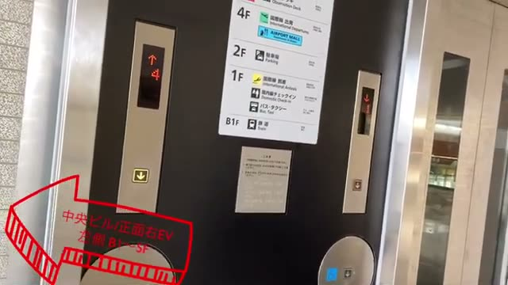
实拍截图：中央大楼正面电梯的楼层表；来自页面下方所列的成田机场T1电梯视频。
进入中央大楼电梯后，按按钮 B1。B1就是地下一层B1，这一层通往地铁；不要按四楼，也不要在一楼改走扶梯。
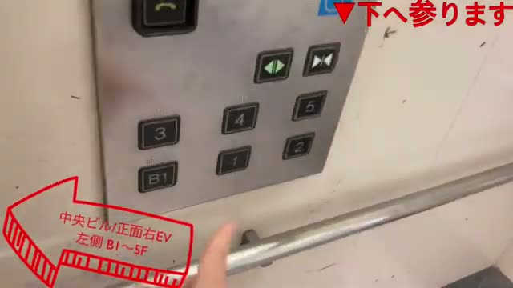
电梯门开后，找小火车图标和中文“铁路（成田机场站）”，沿平路走。看到 京成线 就对了；不要走 JR 线。 京成线柜台和售票机就在这个方向。
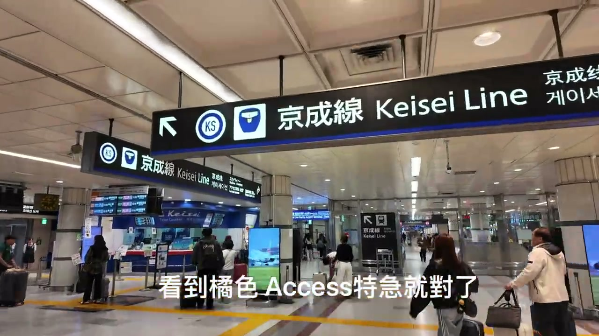
蓝牌写着 京成线 成田机场站（牌上日文：成田空港駅），就是要进的车站。本攻略按交通卡路线编写：用苹果手机里的Suica交通卡、实体Suica卡或PASMO卡刷卡；进站前先按第2步确认卡和余额。
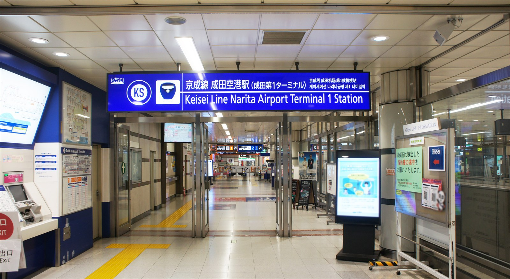
从第6步的蓝色京成线入口刷卡进站后，要找的是 Access特快 / アクセス特急 / Access Express。橙色牌旁边写大数字 1，这是前往1号线的方向。
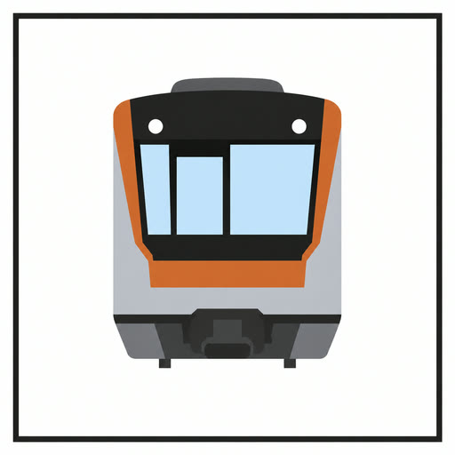
Access特快アクセス特急1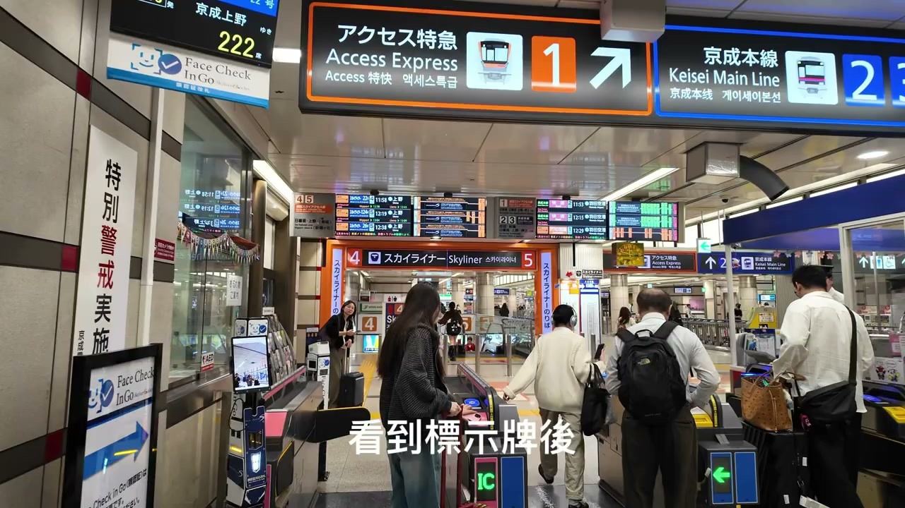
过闸后先稍微向右，继续找橙色Access特快和大数字1；不要去4号线、5号线入口。
这张图写着 Skyliner，两侧是 4号线、5号线。它去日暮里／上野，需要另买特急券；不是去日本桥要走的线路。
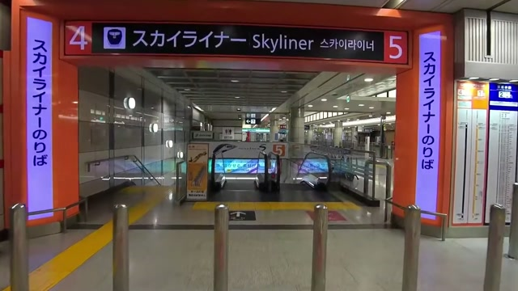
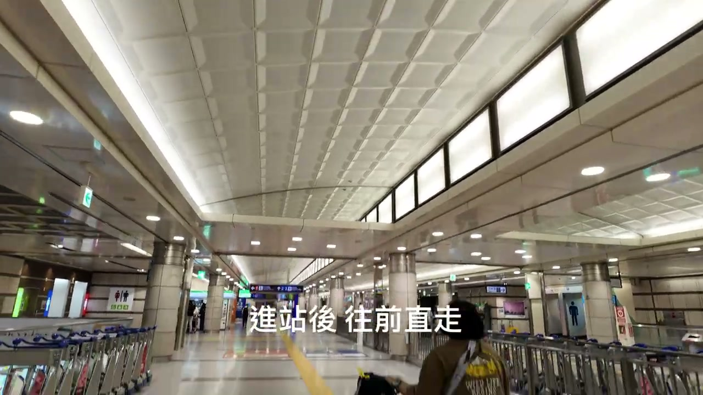
看见全家便利店后，继续找橙色大数字1。全家便利店只是认路地标。
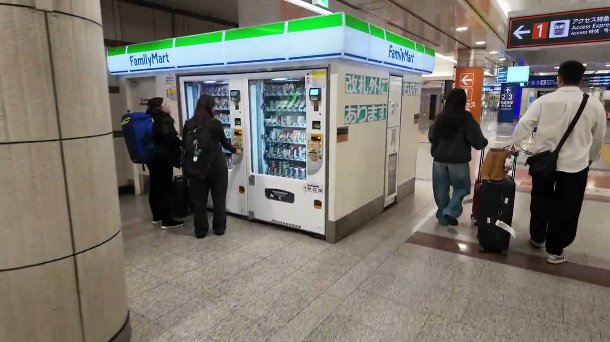
全家便利店在左侧；看见前方橙色大数字1和左箭头时，就准备向左转，不要继续直走。
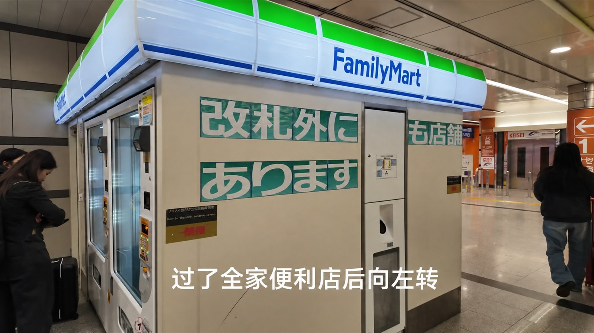
看到下面这块橙色1号线入口，就说明左转的时机到了。
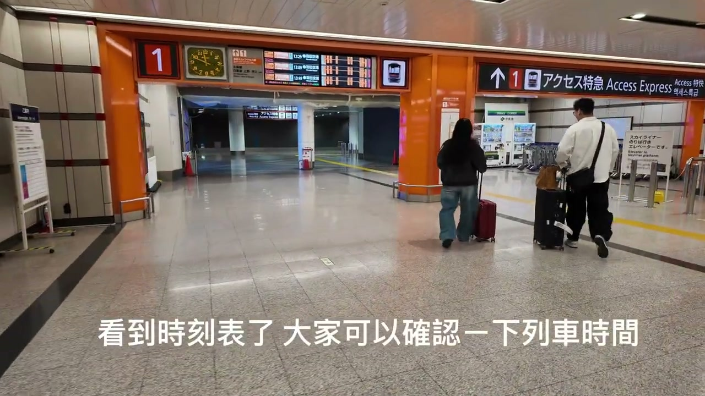
这块电子屏在刷卡进站后才能看到。找到橙色栏的Access特快，记住这班车的发车时间和列车终点。终点常见羽田空港或西馬込。电子屏不会逐站列出“日本橋”，不要在这里寻找“日本橋”。
都営浅草線の日本橋駅まで、乗り換えなしで行けるアクセス特急はどの電車ですか？ エレベーターを使いたいです。
我想乘坐无需换车、直达都营浅草线日本桥站的Access特快，并且需要使用电梯。请问应该乘哪一班？
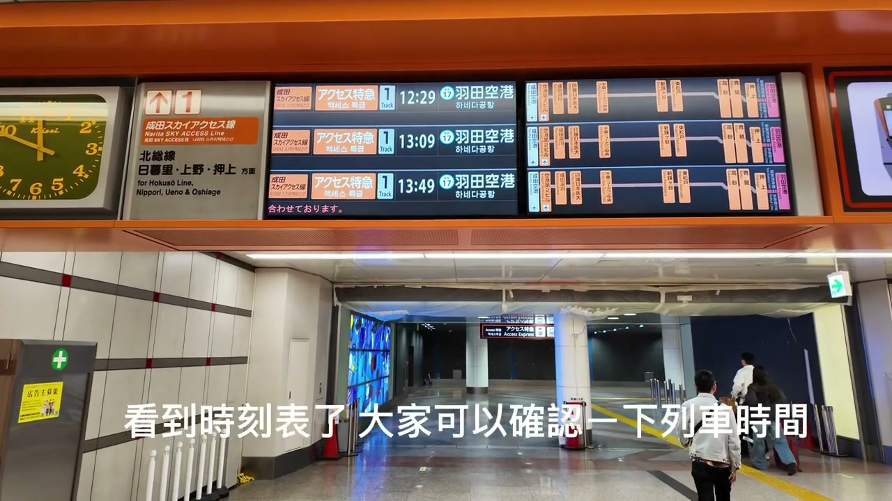
记住电子屏上的发车时间和列车终点后，继续跟头顶的橙色Access特快指示走。
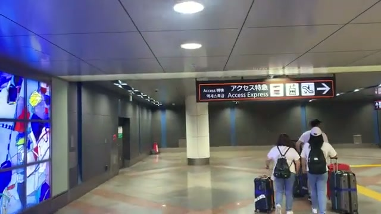
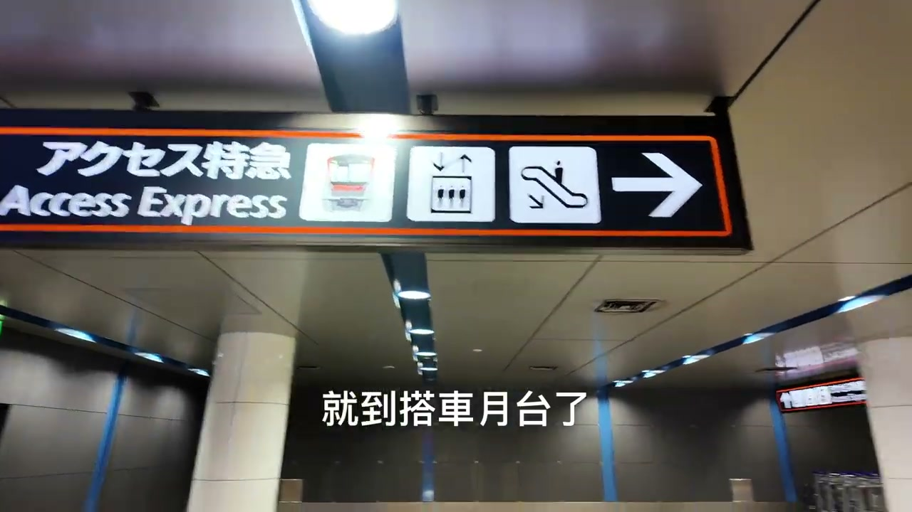
沿橙色大数字1前进，看到电梯图标后，找到1号线旁的电梯，直接按门外的向下按钮。电梯门打开后进去，按B2（地下二层），乘到地下二层B2站台层。不要跟着人群走旁边的扶梯。
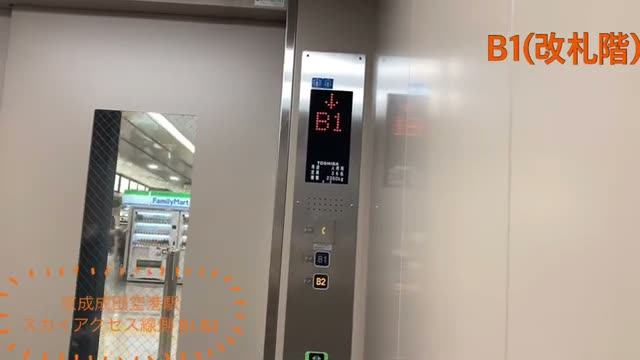
电梯位置已按京成电铁官方站内图核对；实拍画面用于辨认B1与B2按钮。
电梯从地下一层B1闸机层下到地下二层B2站台层。楼层显示B2后走出电梯，就是1号线站台层。
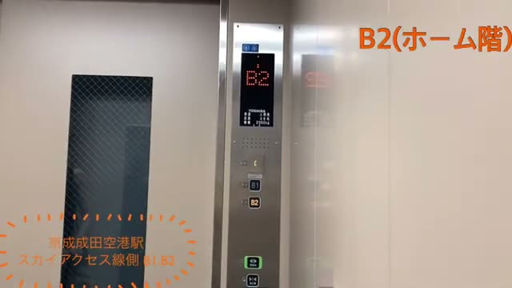
实拍截图：京成Sky Access侧电梯抵达地下二层B2站台层。电梯门和广告可能更新，但楼层链不变。
列车通常会在发车时间前5～10分钟进入1号线站台。确认发车时间、列车终点和“Access特快”都与第8步记下的一样，就跟着大家排队上车，在车内等候。没有晚点时，列车会按电子屏显示的时间准点发车。
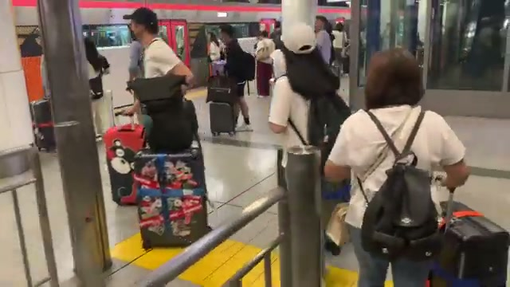
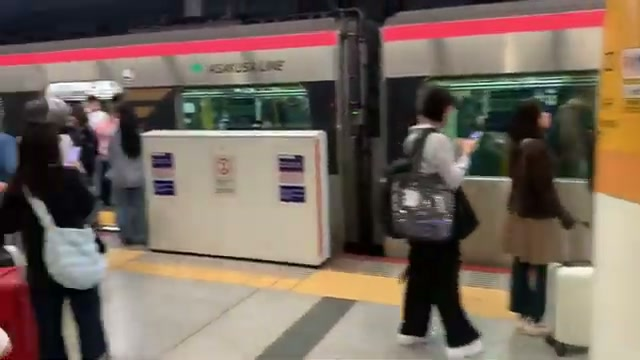
先让下车的人出来，再拉着行李上车。上车后先找座位坐下、放稳行李；如果暂时没有座位，就扶好行李站稳。从成田机场到日本桥大约还要一个多小时，不要着急，之后按第13步留意车内电子屏。
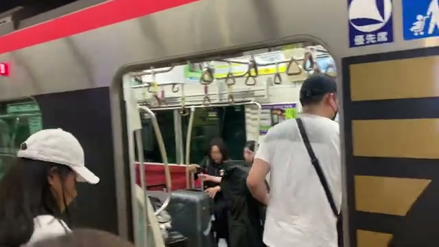
车内电子屏会轮播列车终点、线路图和下一站。屏幕显示羽田空港或西馬込，是在告诉你整班车的终点，并不是让你坐到那里。大部分时间安心坐好；接近日本桥时继续观察车内电子屏，看到“日本橋”到站提示，再准备下车。
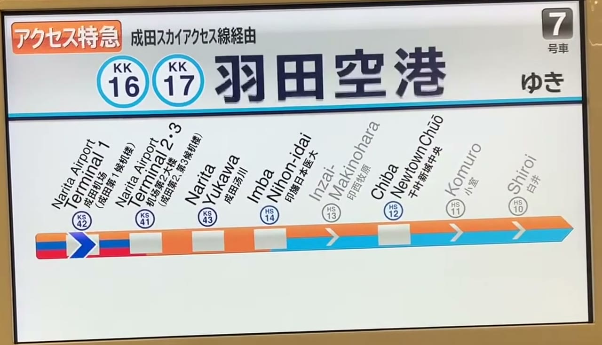
视频5分34秒实拍截图：车内电子屏显示Access特快、终点“羽田空港”和沿途线路图。
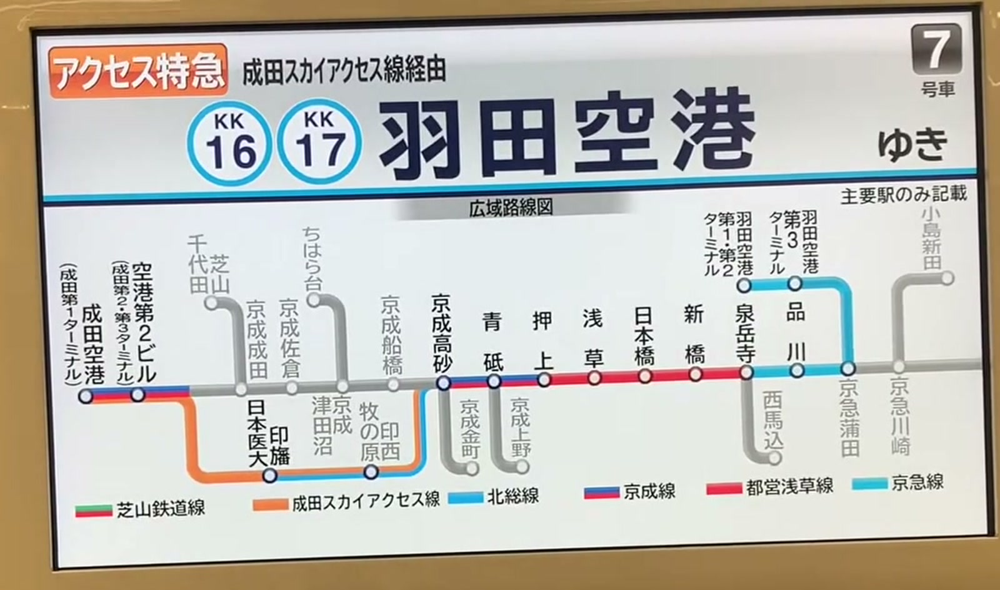
视频5分35秒实拍截图：车内电子屏显示成田Sky Access线、都营浅草线和京急线的直通线路图。
下车站是 都营浅草线 日本桥（日本橋）。途中如果先看到“东日本桥（東日本橋）”，先不要下车；继续等车内电子屏出现没有“東”字的“日本橋”，列车停稳后再下车。下车后不要走普通出口，继续按下面第14步换乘东西线。
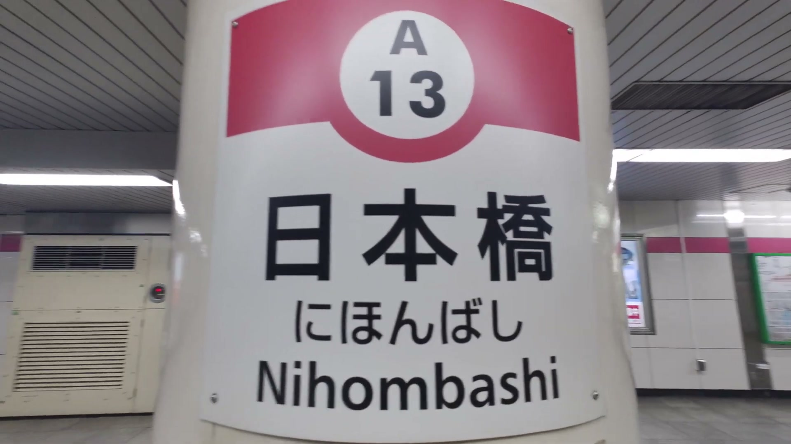
视频末尾2分44秒实拍截图：都营浅草线日本桥站的站台柱子站牌。
上车后可用 AI 再确认到站时间：把上车时间和电子屏显示的车次／终点发给 ChatGPT 或 Google AI，请它查询这班车预计几点到都营浅草线日本桥站。手机时间只作提醒；看到站名“日本橋”再下车。
这是与本次路线最接近的完整参考视频，可点击直接观看。视频用于辨认沿途场景；携带行李时，仍按本页步骤乘电梯。
刷出浅草线闸机 → 右转乘电梯 → 长通道 → 看到东西线入站标志后刷卡进入 → 前往东西线4号线
到日本桥（站牌写：日本橋）后直接下车。站台和浅草线地铁闸机都在地下二层B2；沿同层站台平路找东西线换乘图标、电梯图标和茅场町方向闸机（牌上日文：茅場町方面改札）。
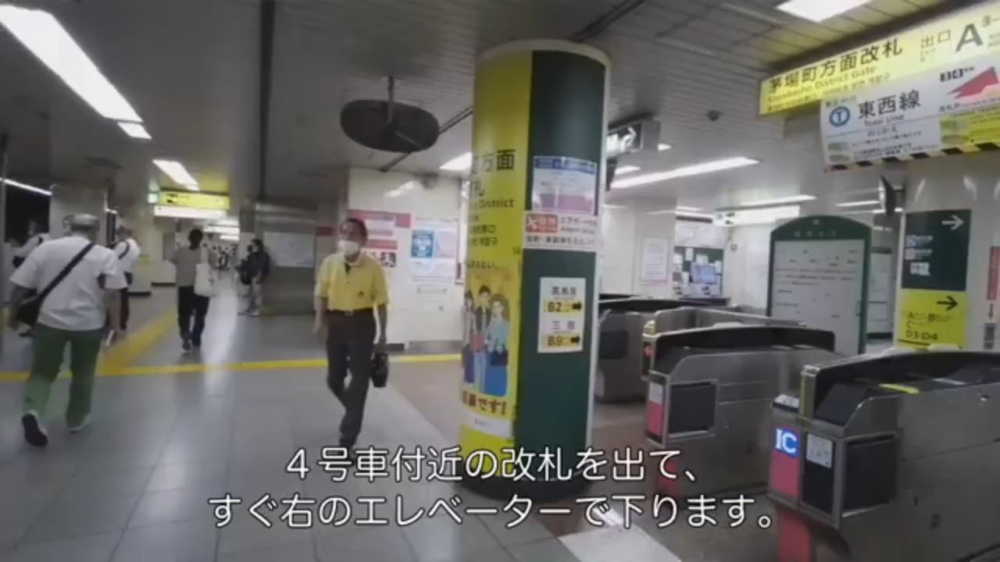
视频截帧：CORO2GO《日本橋駅 浅草線から東西線へ—階段のない乗り換え》；用于辨认闸机与电梯方向。
从茅场町方向闸机用同一张Suica交通卡或PASMO卡刷出，出闸后马上向右看。乘闸机外的电梯从地下二层B2下降到地下三层B3；不要跟人群去楼梯或地面出口。
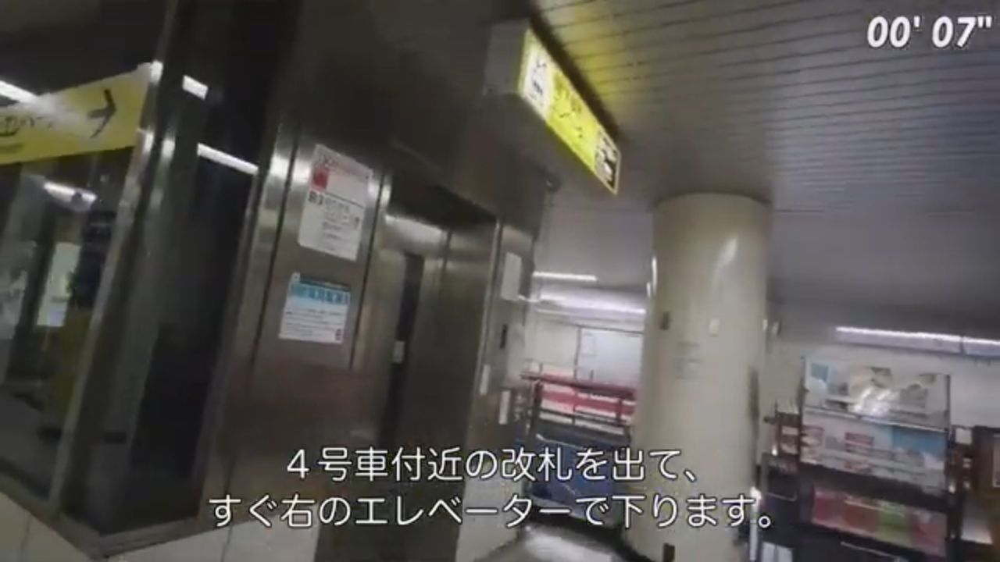
视频截帧：CORO2GO；现场电梯门与广告可能更新。
电梯门开后，沿地下三层B3的无台阶通道一直直走。主要寻找东西线和换乘图标（牌上日文：東西線）。看到东西线入站标志后，用同一张交通卡再次刷入。同一组闸机也通往银座线，所以现场还会看到“银座线”标识；本次需要乘坐的是东西线。
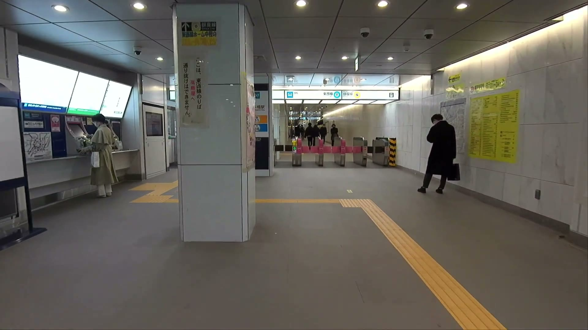
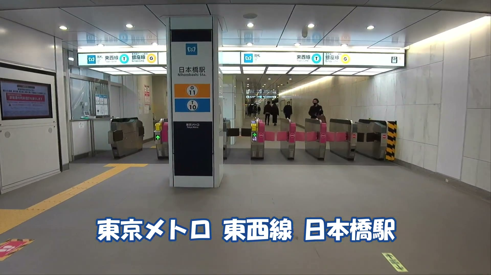
清晰实拍截图：Traveler Sheep《日本桥站 都营浅草线换乘东西线》，约1分55秒至1分58秒。
这是出闸换乘，不是走错路。IC 卡按规则自动处理；请在 60 分钟内完成，并且刷同一张卡。
刷进东西线闸机后前往站台，只找柱子或牌上的大数字4。本页称为东西线4号线，它开往高田马场方向。4号线列车的终点站是中野或者三鹰，都会停靠高田马场。数字3是反方向，绝对不要上。
✓ 正确：4号线 → 高田马场／中野方向。
× 错误：3号线 → 西船桥方向。
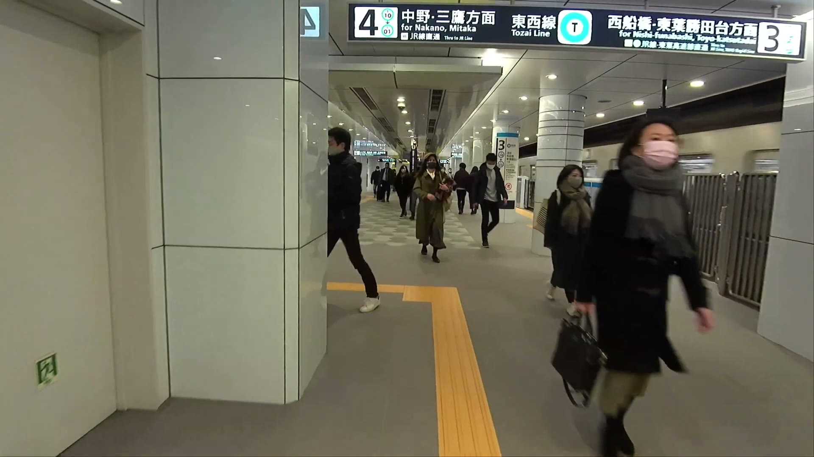
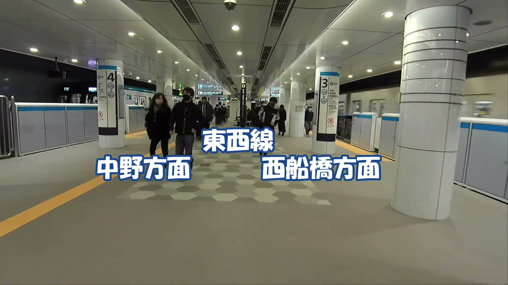
清晰实拍截图：Traveler Sheep《日本桥站 都营浅草线换乘东西线》，约2分18秒至2分21秒。
从日本桥站乘东西线，依次经过：大手町 → 竹桥 → 九段下 → 饭田桥 → 神乐坂 → 早稻田 → 高田马场（站牌写：高田馬場）。这段线路运行的东西线列车，会停靠高田马场，列车的终点站是中野或者三鹰。
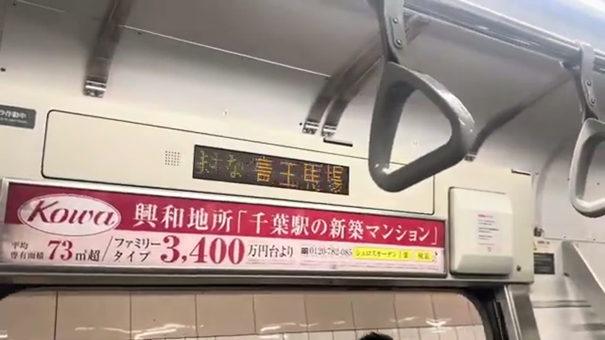
照片：MaedaAkihiko / Wikimedia Commons / CC BY-SA 4.0（网页放大裁切显示）。
视频前半段可跟着认闸机、电梯和长通道；到东西线后仍以本页为准找大数字4，也就是4号线，不要照视频末尾的站台画面判断方向。需联网播放。
连续乘两部电梯到地面 → 站前广场平路过街 → BIGBOX入口 → 刷进西武新宿线后乘电梯
到高田马场后直接下车。沿站台向列车前进方向走，找电梯图标和JR／西武换乘图标；电梯位置约在9号车厢前方、9～10号车厢交界附近。
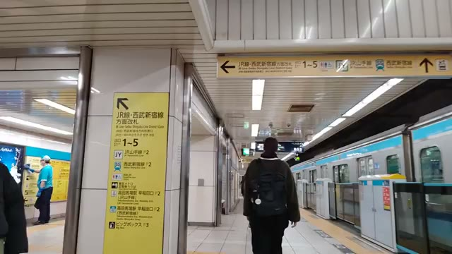
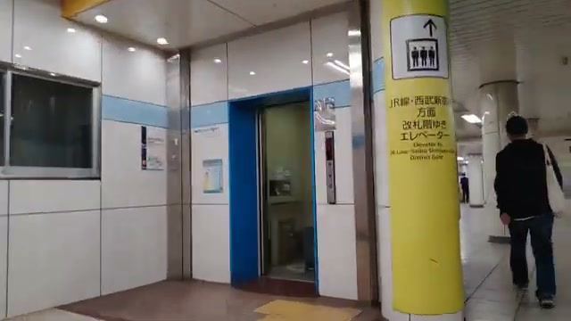
第一部电梯从地下二层B2站台到地下一层B1闸机层。从靠近4号、5号出口一侧的“JR／西武方向闸机”（牌上日文：JR線・西武新宿線方面改札）刷出后，立即左转。第二部电梯不在闸机旁边：沿地下一层B1的平路继续跟电梯图标、黄色盲道和“电梯专用出口／去地面”（牌上日文：エレベーター専用口／地上へ），找到蓝框电梯，再乘到地面一层1F。
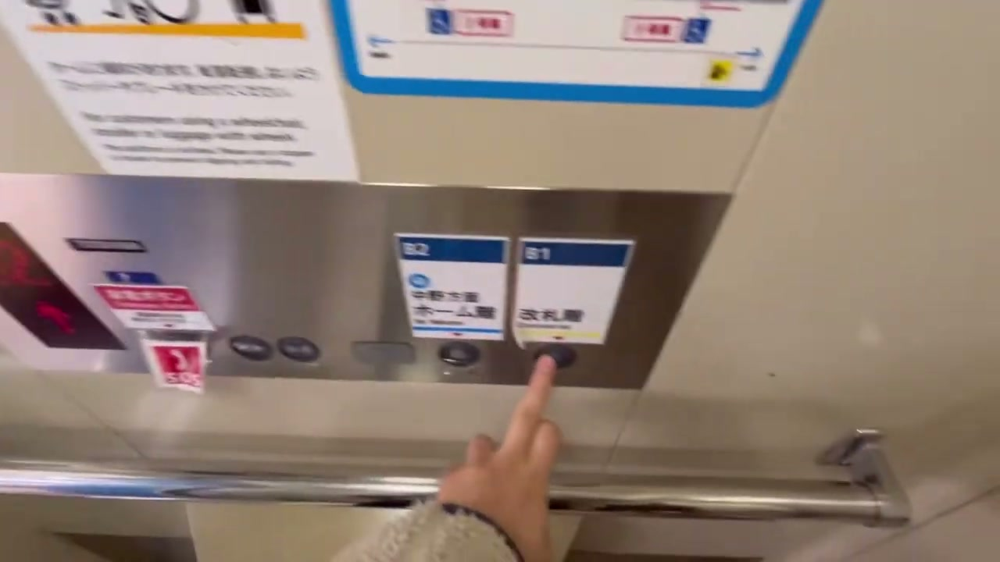
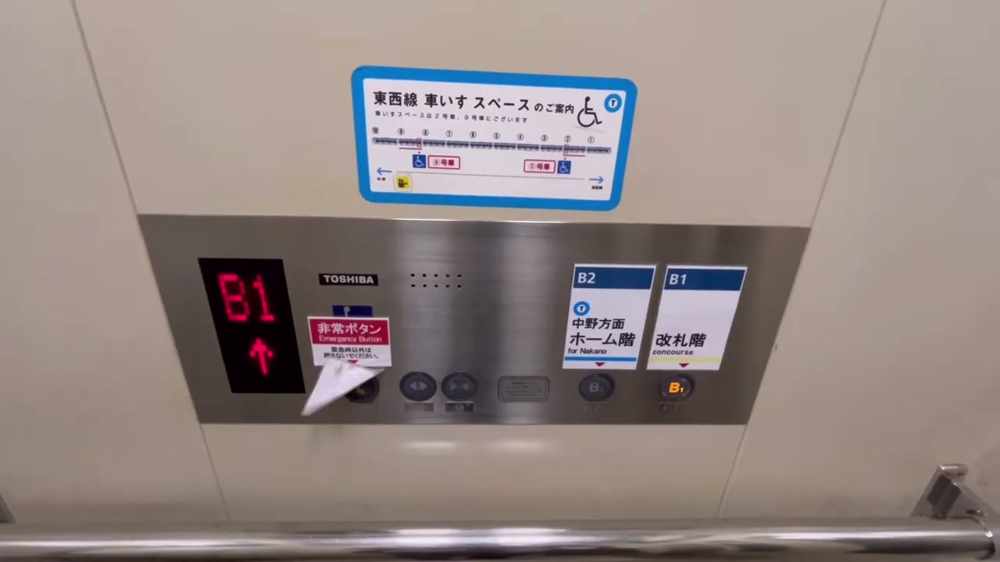
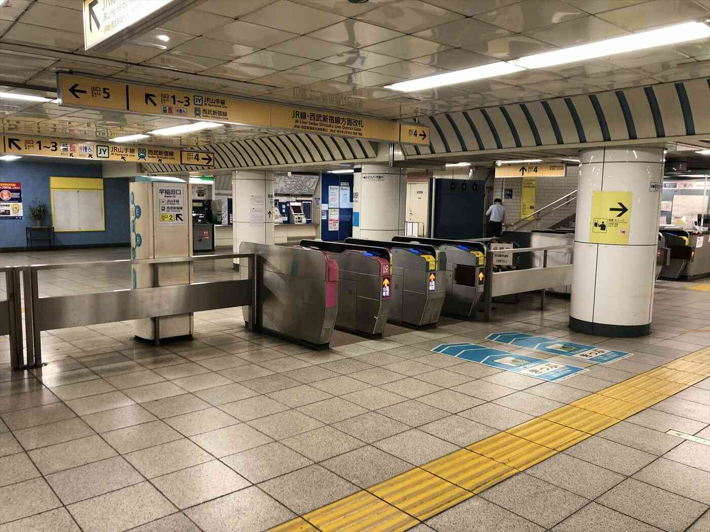
闸机照片：わだっつログ（Wadattsu）；普通网站图片，非开放许可，仅作路线辨认。对外公开发布前请取得原作者许可。
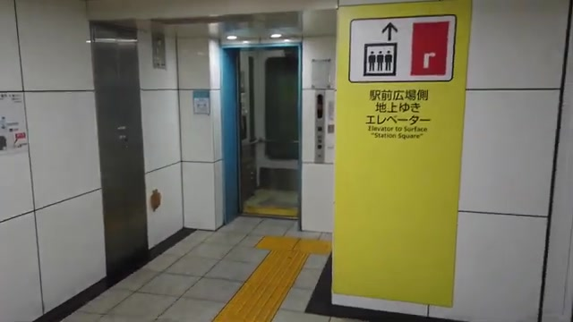
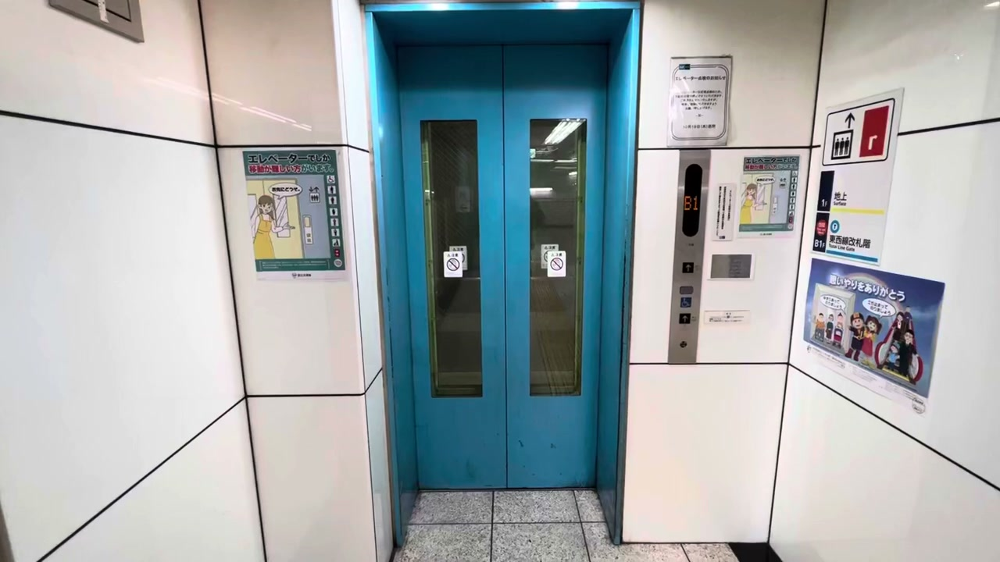
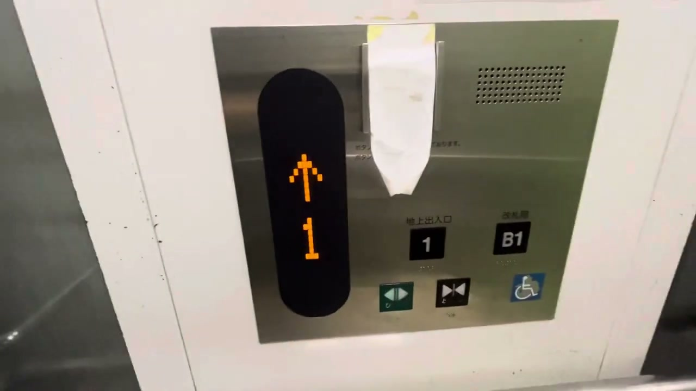
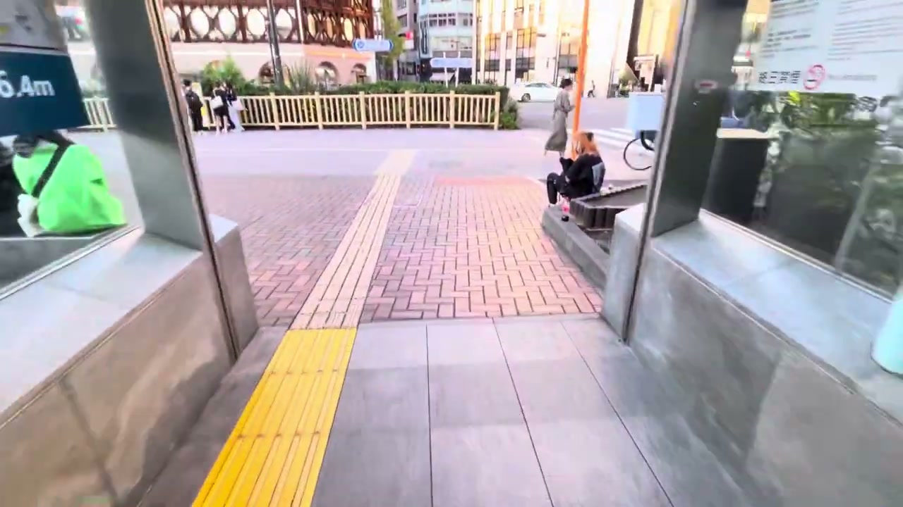
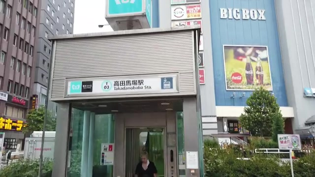
不要进JR闸机，也不要走2号或3号出口的楼梯。只找电梯图标和“电梯专用出口”。
如果电梯开门时正前方看不到BIGBOX，不是走错；要先左转过短横道，过街后再左转，才会看到BIGBOX大楼。全程是短距离室外平路，没有楼梯；过街先看信号与车辆，行李箱慢慢拉。
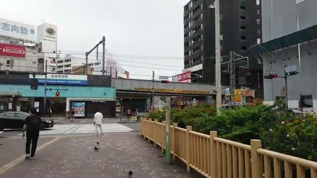
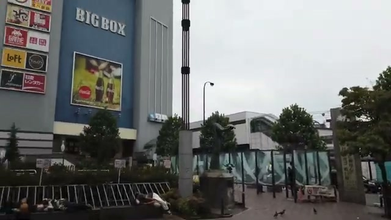
在BIGBOX入口（牌上日文：ビッグボックス口）用同一张交通卡刷进西武新宿线。入口闸机在地面一层1F；刷卡后找电梯，进去按数字2，到地面二层2F站台层。电梯开门后找头顶电子显示牌左上角的蓝底大数字3；3是站台号，不是楼层。数字5去西武新宿，是反方向。
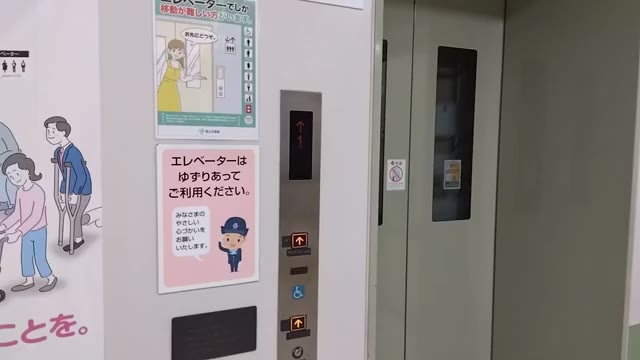
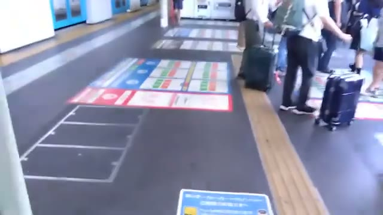
乘坐站台电子屏显示“各停”的列车，并在脚下写着“各駅停車”的地面标志附近等候。“各停”和“各駅停車”翻译成中文，都是“各站停车／慢车”的意思。脚下文字只表示候车位置，最终仍以这一班车的电子屏显示“各停”为准。急行、准急等快车会越过新井药师前；就算更早发车也不要上。
站台方向牌可能写“所泽／本川越／拝岛方向”，但列车终点也可能是上石神井、田无、新所泽或玉川上水；不要拿终点名称当成必须条件。
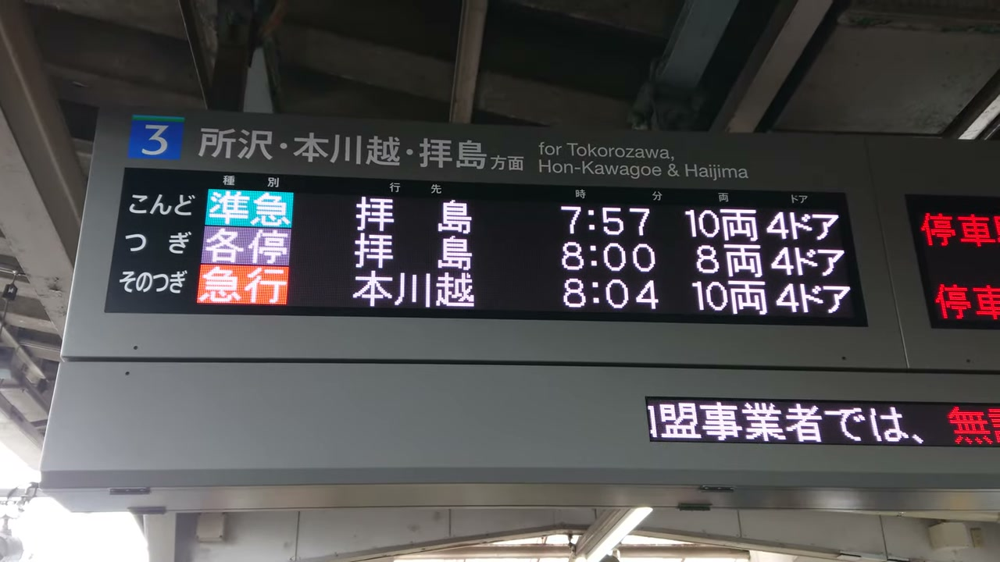
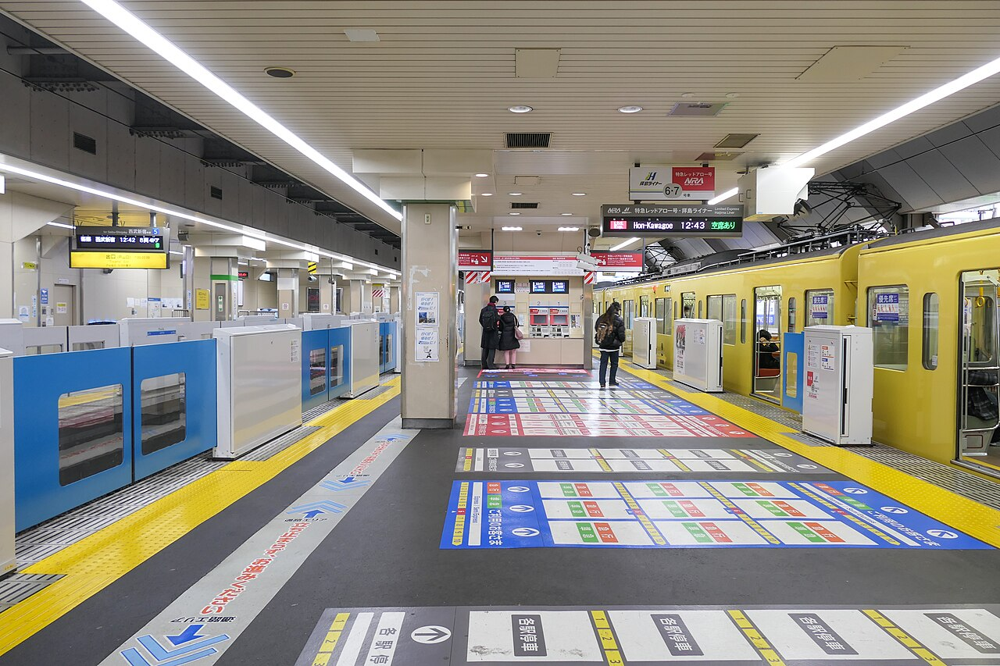
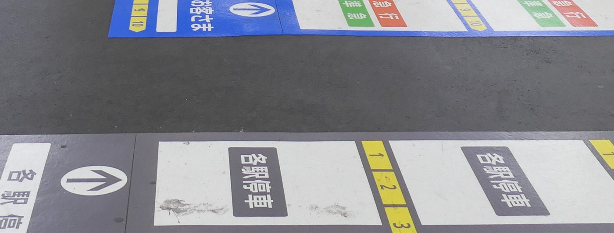
照片：MaedaAkihiko / Wikimedia Commons / CC BY-SA 4.0；第一张保留完整构图，第二张裁切放大地面“各駅停車”标识。
从高田马场出发后依次是：下落合 → 中井 → 新井药师前（站牌写：新井薬師前），通常约6～7分钟。不要只靠听日语；看屏幕或站牌上的“新井薬師前”站名，并提前设手机提醒。
下车后沿站台前往南口闸机
到新井药师前后直接下车，顺着人流方向走，并以南口箭头为准；到闸机后刷卡出站。
日本橋まで乗り換えなしのアクセス特急に乗りたいです。エレベーターを使いたいです。
我要乘坐直达日本桥的Access特快，并且需要使用电梯。
都営浅草線から東西線まで、エレベーターだけで乗り換えたいです。
我想只乘电梯，从浅草线换乘东西线。
すみません、荷物が多いので、エレベーターだけで行きたいです。
不好意思，我行李很多，想只坐电梯前往。
高田馬場のエレベーター出口から、西武新宿線のビッグボックス口まで、どう行けばいいですか？
从高田马场的电梯出口到西武新宿线 BIGBOX 口该怎么走？
新井薬師前まで各駅停車で行きたいです。3番線で合っていますか？
我想乘各站停车慢车去新井药师前，3号线对吗？
如果当天出口是南翼怎么办？
两边的共同目标都是中央大楼电梯。到地下一层B1后才跟小火车图标走平路去京成线；不要乘大厅里最近的扶梯下楼。